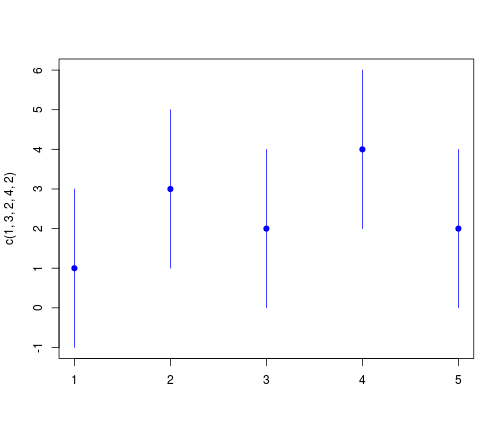
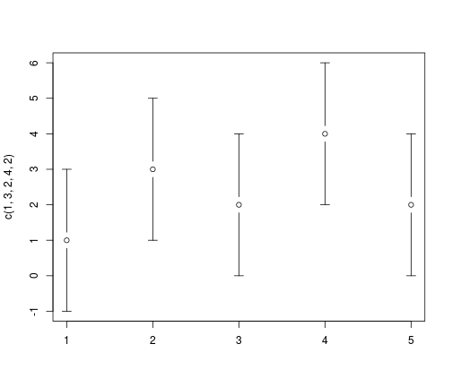

Hilary Parker:
I really should just make an R package with these functions so I don't have
to keep copy/pasting them like a goddamn luddite.
Damjan Vukcevic
Statistician & data scientist
Hilary Parker:
I really should just make an R package with these functions so I don't have
to keep copy/pasting them like a goddamn luddite.
"Packages are the fundamental units of reproducible R code." (Hadley Wickham)
"R packages are the best way to distribute R code and documentation..." (Karl Broman)
Save time
Better code
Easy to create
Helpful even when writing code just for yourself
Start slowly
Don't need to learn everything at once
Your first R package
Efficient workflow
Improving and sharing your package
Managing packages
functions.R, the poor man's R packagePlace function definitions in a file called functions.R
Load this in other scripts using source("function.R")
In functions.R:
# Calculate the square of x.
square <- function(x)
x^2
In your R session:
source("functions.R")
square(1:3)
## [1] 1 4 9
In functions.R:
# Resample values from a given vector.
resample <- function(x, ...)
x[sample.int(length(x), ...)]
In your R session:
source("functions.R")
resample(letters[1:10])
## [1] "h" "j" "b" "c" "e" "g" "a" "i" "f" "d"
Create folder structure
mypackage/
└── R/
Move functions.R into the R subfolder
mypackage/
└── R/
└── functions.R
Create the DESCRIPTION and NAMESPACE files
mypackage/
├── R/
│ └── functions.R
├── DESCRIPTION
└── NAMESPACE
Your DESCRIPTION file should look similar to:
Package: mypackage
Title: This is my first R package
Description: This package was created as a way to learn how to write R
packages. It contains various helper functions and variable definitions.
Authors@R: person("First", "Last", email = "first.last@example.com",
role = c("aut", "cre"))
Version: 0.1
Depends: R (>= 3.3.1)
License: GPL-3
LazyData: true
Your NAMESPACE file should look like:
# Export all names
exportPattern(".")
Install your package:
R CMD INSTALL mypackage
(Run this on the command line, from the folder one level above mypackage)
Use your new package in R:
library(mypackage)
square(1:3)
## [1] 1 4 9
resample(letters[1:10])
## [1] "e" "h" "i" "j" "d" "c" "a" "b" "f" "g"
Can split up your code into any number of .R files
mypackage/
├── R/
│ ├── resample.R
│ └── square.R
├── DESCRIPTION
└── NAMESPACE
All .R files within the R subfolder will automatically be included
in your package
(More convenient than if source()-ing)
functions.R)devtools: Hadley Wickham's R package for 'painless package development'roxygen2: In-source documentation systemtestthat: 'Tools to make testing fun :)'knitr: Dynamic report generationHighly recommended!
Grab the whole kit:
install.packages(c("devtools", "roxygen2", "testthat", "knitr"))
devtoolsStarting a new package:
library(devtools)
create("mypackage")
This sets up the basic folder structure and files (DESCRIPTION, etc.)
| Old way | New way | |
|---|---|---|
| Development | source("functions.R") |
load_all("mypackage") |
| Use | source("functions.R") |
library("mypackage") |
Edit code in R subfolder
In an R session:
(a) load_all("mypackage")
(b) Test out your functions
Repeat until happy
install("mypackage")
Help pages are accessed by using ? or help()
For example: ?read.table
R packages should provide help pages as well as code
R packages follow specific conventions for documentation. These used to be difficult to follow
roxygen2 allows you to write documentation as inline comments in your
.R files
devtools makes the whole process easy
roxygen2 commentsPlace comments directly above your code
Use #` instead of #
First 3 blocks of text: Title, Description, Details
Include the @export tag (will explain later...)
#' Resampling
#'
#' \code{resample} takes a random sample from a given vector.
#'
#' This function is an alternative to \code{sample}. Unlike the latter, it
#' always interprets the first argument as the set of elements to sample from,
#' even when it is of length 1. This consistency makes it more suitable for
#' programmatic use.
#'
#' @export
resample <- function(x, ...)
x[sample.int(length(x), ...)]

Edit roxygen2 comments
In an R session:
(a) document("mypackage")
(b) Inspect help pages using ?
Repeat until happy
install("mypackage")
Remember to run library(devtools) before doing any development.
Hadley recommends adding it to your startup file (.Rprofile):
if (interactive())
suppressMessages(require(devtools))
More documentation
Dependencies (imports)
Namespaces (exports)
Sharing your package
Use roxygen2 tags (@param, @return,...) to add sections beyond the 3 basic blocks
Some standard sections for function definitions:
@param)@return)@seealso)@examples)#' Resampling
#'
#' \code{resample} takes a random sample from a given vector.
#'
#' @export
#' @param x A vector of elements from which to sample.
#' @param ... Further arguments passed to \code{sample}.
#' @return A vector of elements drawn from \code{x}.
#'
#' @seealso \code{\link[base]{sample}}
#'
#' @examples
#' resample(5:10) # same as sample(5:10)
#' resample(5) # NOT the same as sample(5)
resample <- function(x, ...)
x[sample.int(length(x), ...)]

Use run_examples() to verify that your examples work
> library(devtools)
> run_examples("mypackage")
Updating mypackage documentation
Loading mypackage
Writing resample.Rd
Running 3 example files in mypackage ------------------------------
Loading mypackage
Running examples in resample.Rd -----------------------------------
>
> resample(5:10) # same as sample(5:10)
[1] 5 9 6 10 8 7
> resample(5) # NOT the same as sample(5)
[1] 5
Loading mypackage
Never use library() or require() or source() in package code
Invoke functions from other packages using package::function()
List all such external packages in the Imports section of the
DESCRIPTION file
This will ensure these packages are installed along with your package
Easy way: run use_package("package") in your R session
Write R code:
#' Plot Error Bars and Confidence Intervals
plotCI <- function(..., sfrac = 0, gap = 0, pch = 19, col = "blue")
gplots::plotCI(..., sfrac = sfrac, gap = gap, pch = pch, col = col)
In an R session, declare the dependency:
use_package("gplots")
The DESCRIPTION now says:
Package: mypackage
Title: This is my first R package
...
Imports: gplots
library(mypackage)
plotCI(c(1, 3, 2, 4, 2), uiw = 2)

library(gplots, warn.conflicts = FALSE)
plotCI(c(1, 3, 2, 4, 2), uiw = 2)

NAMESPACE defines which functions will be available to users of the package
Typically best to only expose the 'high-level' functions
This is called 'exporting' the function
Workflow:
Add the @export tag to desired functions
Use document() to automatically create NAMESPACE
Edit code to add the @export tag:
#' @export
resample <- function(x, ...)
x[sample.int(length(x), ...)]
In an R session, run:
document("mypackage")
The NAMESPACE now says:
export(resample)
Some options (in order of accessibility):
A de facto modern standard (after CRAN...)
install_github() using devtools)Would need to learn Git...but you should anyway!
Easiest options:
build("mypackage") ('bundled' package)Then send to colleagues, post on websites, etc.
Consider the following:
See Hadley Wickham's guide for more details
create()load_all(), fix & repeatroxygen2 comments, document(), fix & repeattest(), fix & repeat)load_all(), fix & repeat)document(), fix & repeatcheck(), fix & repeatDESCRIPTION (e.g. new version number)check()Package up your code in a way that best promotes re-use:
Generic but frequently used code
→ Personal/miscellaneous utility package
Examples: gplots, Hmisc, rafalib
Standalone utility code specific to a context (e.g. data parsing)
→ Specific utility package
Examples: devtools, ggplot2, data.table, stringr
General modelling code
→ Modelling package
Examples: randomForest, lme4, forecast
Project code
→ Project package
Installing
Upgrading
Finding and installing dependencies
Re-installing packages after a major R upgrade
Where are R packages installed?
| Source | With devtools |
Traditional way |
|---|---|---|
| Local file/folder | install("package") |
R CMD INSTALL package |
| CRAN | install_cran("package") |
install.packages("package") |
| GitHub | install_github("username/package") |
|
| Other | install_*() functions |
To ensure you have the latest version of all dependencies for a package, install using:
library(devtools)
update_packages("package")
Quick and easy:
library(devtools)
update_packages()
For more fine-grained control:
update.packages()
You have a folder full of scripts, each depending on various packages
Use the reinstallr package to install them all:
library(reinstallr)
reinstallr("path/to/folder")
You've done an R upgrade and all of your packages are missing?
Re-install them (CRAN packages only) by running:
update.packages(checkBuilt = TRUE, ask = FALSE)
A library is a folder for storing installed packages
.libPaths()
## [1] "/home/damjan/R/x86_64-pc-linux-gnu-library/3.3"
## [2] "/usr/local/lib/R/site-library"
## [3] "/usr/lib/R/site-library"
## [4] "/usr/lib/R/library"
This can be useful for debugging your R installation
Start slowly
Don't need to learn everything at once
devtools & RStudioSome keyboard shortcuts:
load_all()document()https://dvukcevic.github.io/rpkgs-talk/
Web - http://damjan.vukcevic.net/
Email - damjan@vukcevic.net
Twitter - @VukcevicD